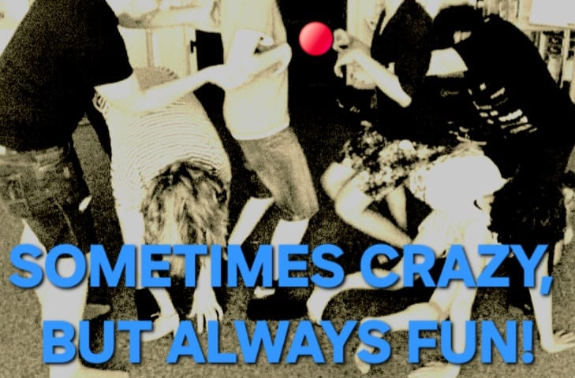

Aus meiner Arbeit als Körpertherapeutin ist ein besonderes Angebot entstanden, das Theater, Achtsamkeit und persönliche Entwicklung miteinander verbindet.
Hier steht nicht die Aufführung im Mittelpunkt, sondern der Mensch. Das Theaterspiel wird zum Erfahrungsraum für Selbsterkenntnis und innere Entfaltung. Spielerisch erforschen wir die Verbindung zwischen Körper, Gefühlen, Ausdruck und Wahrnehmung – immer mit dem Fokus auf das eigene Erleben.
In einem geschützten Rahmen können die Teilnehmenden sich selbst neu begegnen, ihre Ausdruckskraft entdecken und die stärkende Wirkung des gemeinsamen Spiels erfahren. Dabei entstehen Räume für Leichtigkeit, Kreativität, Spontaneität und echtes Erleben – frei von Leistungsdruck und Erwartungen.

Die Gruppe bietet die Möglichkeit, sich selbst bewusster wahrzunehmen und gleichzeitig Teil eines lebendigen Miteinanders zu sein. Es geht um das Erleben von „Ich und die Gruppe“, um Verbundenheit und Individualität gleichermaßen.
Wirkung des Kurses:
Durch achtsamkeitsorientierte Übungen, Elemente aus der Körpertherapie und kreative Theatermethoden werden innere Ressourcen gestärkt. Das Theaterspiel hilft dabei, Selbstvertrauen aufzubauen, die eigene Präsenz zu stärken und einen liebevolleren Zugang zu den eigenen Gefühlen, Bedürfnissen und Fähigkeiten zu entwickeln.
Im Vordergrund stehen die psychogene Wirkung sowie die Freude am gemeinsamen kreativen Prozess. Nicht das Ergebnis zählt, sondern der Weg dorthin: das Erleben, das Spüren und das Wachsen.